3-3-repo
1. 判断lattice_loss主导项¶
-
在 loss_one_step 里，lattice_loss 实际上是两块相加：
-
A. 扩散回归主项：dtime4continuous_loss(...)
-
B. 体积正则项：vol_loss = vol_loss_weight * (vol_l2 + vol_lower)，再加回 lattice_loss
-
实验方法：把 vol_loss_weight 临时设为 0 跑一小段验证
PYTHONPATH=. LD_LIBRARY_PATH=/home/liem/.local/share/mamba/envs/mof-bfn/lib:$LD_LIBRARY_PATH \
CUDA_VISIBLE_DEVICES=3,4 python experiments/train.py \
--config-dir configs \
--config-name bfn_base_bhm_tot \
experiment.num_devices=2 \
experiment.trainer.strategy=ddp \
+model.vol_loss_weight=0.0 #手动置零
vol_loss_weight = 0的情况¶
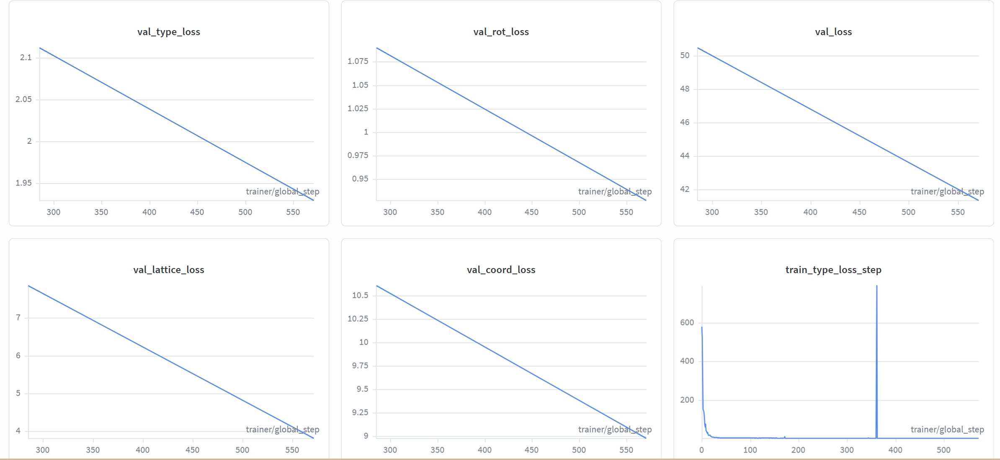
论文原本情况¶
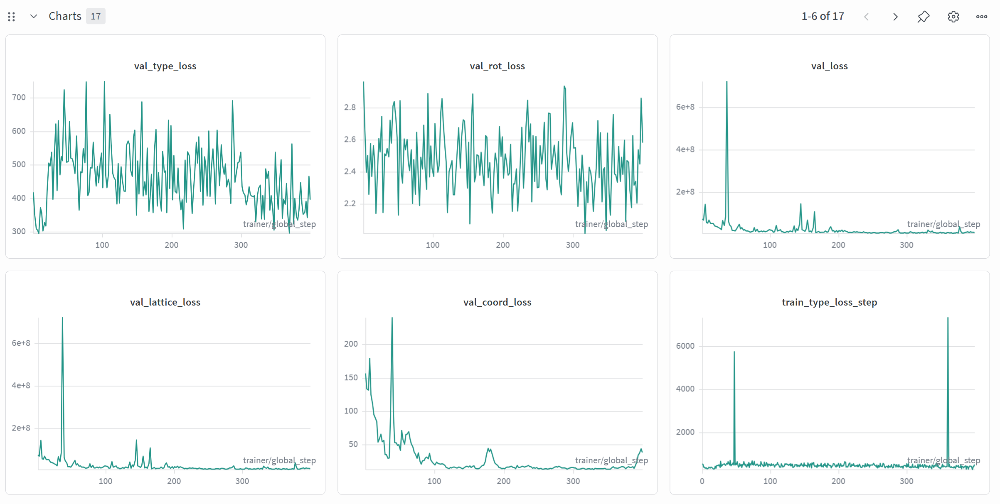
- 对比看出loss显著下降，因此vol_loss是主导项
2. 检查训练集里的 gt_vol 分布¶
python - <<'PY'
import math, pickle
import numpy as np
import lmdb
import torch
from tqdm import tqdm
lmdb_path = "/home/liem/data/mofbfn/datasets/dng/MetalOxo_bb_preprocessed.lmdb"
idx_path = "/home/liem/data/mofbfn/datasets/dng/train_bb.idx"
def volume_from_lengths_angles(lengths, angles_deg):
a, b, c = map(float, lengths)
alpha, beta, gamma = np.deg2rad(list(map(float, angles_deg)))
cosA, cosB, cosG = math.cos(alpha), math.cos(beta), math.cos(gamma)
inner = 1 + 2*cosA*cosB*cosG - cosA*cosA - cosB*cosB - cosG*cosG
inner = max(inner, 1e-12)
return a * b * c * math.sqrt(inner)
with open(idx_path, "rb") as f:
idxs = pickle.load(f)
env = lmdb.open(lmdb_path, subdir=False, readonly=True, lock=False, readahead=False)
vols = []
missing = 0
with env.begin() as txn:
for i in tqdm(idxs, desc="scan train gt_vol"):
raw = txn.get(str(i).encode())
if raw is None:
missing += 1
continue
dp = pickle.loads(raw)
lat = dp["lattice_1"]
if torch.is_tensor(lat):
lat = lat.detach().cpu().numpy()
lat = np.asarray(lat).reshape(-1)
lengths, angles = lat[:3], lat[3:]
vols.append(volume_from_lengths_angles(lengths, angles))
vols = np.asarray(vols, dtype=np.float64)
print("N =", vols.size, "missing_keys =", missing)
print("mean =", vols.mean(), "std =", vols.std(), "min =", vols.min(), "max =", vols.max())
for p in [0, 1, 5, 25, 50, 75, 95, 99, 100]:
print(f"p{p:>3} =", np.percentile(vols, p))
logv = np.log10(vols)
print("log10(V) p1/p50/p99 =", np.percentile(logv, 1), np.percentile(logv, 50), np.percentile(logv, 99))
try:
import matplotlib.pyplot as plt
plt.figure(figsize=(6,4))
plt.hist(logv, bins=100)
plt.xlabel("log10(gt_volume)")
plt.ylabel("count")
plt.tight_layout()
plt.savefig("train_gt_log10vol_hist.png", dpi=200)
print("saved: train_gt_log10vol_hist.png")
except Exception as e:
print("matplotlib not available, skip plot:", e)
PY
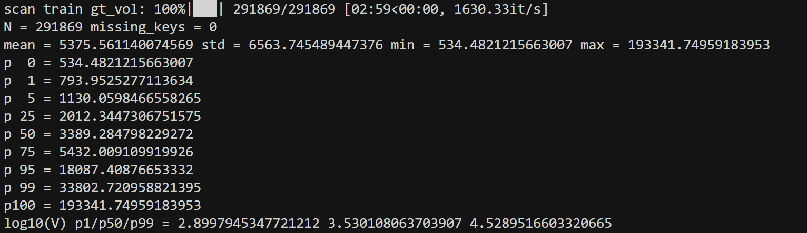
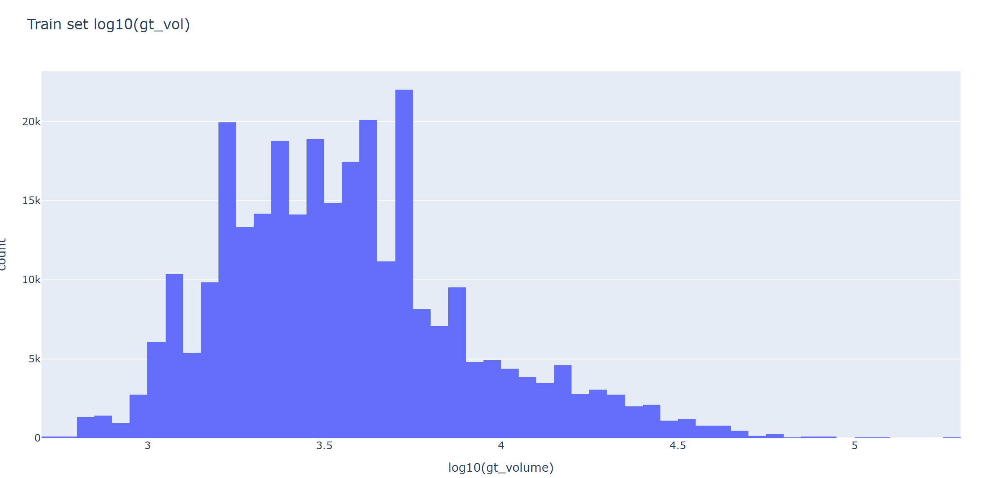
-
绝大多数训练样本的体积在 \(10^3\) ～ 几 \(10^4\)，这是模型应该重点拟合的主区间。
-
少量极大体积样本是“长尾”，在当前是按普通 L2 参与体积 loss 的，这些长尾样本一旦预测偏差大，会强烈拉高 vol_l2，从而放大 lattice_loss。
检查生成晶体的 gt_vol 分布¶
/home/liem/.local/share/mamba/envs/mof-bfn/bin/python - <<'PY'
import glob
import numpy as np
cifs = sorted(glob.glob('/home/liem/data/mofbfn/infer_dng/samples/pred_*.cif'))
print('cif_count', len(cifs))
vols = []
bad = []
# Prefer pymatgen for robust CIF parsing
try:
from pymatgen.core.structure import Structure
except Exception as e:
raise RuntimeError(f'pymatgen import failed: {e}')
for p in cifs:
try:
s = Structure.from_file(p)
vols.append(float(s.lattice.volume))
except Exception as e:
bad.append((p, str(e)))
vols = np.asarray(vols, dtype=np.float64)
print('parsed', vols.size, 'failed', len(bad))
if bad:
print('first_fail', bad[0][0], bad[0][1][:200])
if vols.size:
print('mean', vols.mean(), 'std', vols.std(), 'min', vols.min(), 'max', vols.max())
for p in [0,1,5,25,50,75,95,99,100]:
print(f'p{p:>3}', np.percentile(vols, p))
logv = np.log10(vols)
print('log10(V) p1/p50/p99', np.percentile(logv,1), np.percentile(logv,50), np.percentile(logv,99))
# plotly html
try:
import plotly.express as px
fig = px.histogram(x=logv, nbins=80, labels={'x':'log10(pred_volume)'}, title='Generated samples: log10(pred_vol)')
out = '/home/liem/data/mofbfn/infer_dng/samples/pred_log10vol_hist.html'
fig.write_html(out)
print('saved', out)
except Exception as e:
print('plotly failed/absent:', e)
PY
-
统计（pred_vol）：
-
mean = 3896.08，std = 5008.68
-
min = 572.60，max = 58839.85
-
p50（中位数） = 2606.34
-
p1 / p99 = 723.04 / 25647.10
-
log10(V) p1/p50/p99 = 2.859 / 3.416 / 4.409
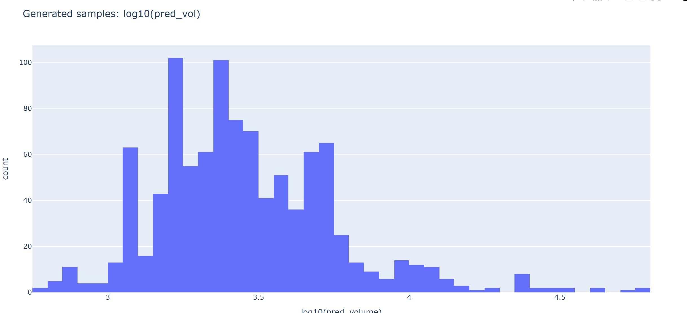
对比结果¶
训练集 gt_vol 中位数约 3389，而你生成样本 pred_vol 中位数约 2606：整体偏小（有塌缩倾向），但仍然有长尾到 104～105 量级。
3.尝试改进¶
改进思路¶
- 换成 log-volume / 相对误差，而不是直接 (Vpred−Vgt)2
当前：
- 用的是 绝对体积的 L2，大体积样本（上万、十万）一旦差一点，惩罚就爆炸。
可以改为在 log 空间做约束，例如：
- 用 (logVpred−logVgt)2
改进代码：/home/liem/MOF-BFN/models/crysbfn_bhm.py中的loss_one_step
# # --- Volume / density regularization ---
# # compute predicted and ground-truth cell volumes from lattice paramization
# try:
# def params_to_lengths_angles(x):
# # x[..., :3] are log(lengths); x[..., 3:] are tan(angle - pi/2)
# lengths = torch.exp(x[..., :3])
# angles = torch.rad2deg(torch.atan(x[..., 3:]) + math.pi / 2)
# return lengths, angles
# def volume_from_lengths_angles(lengths, angles_deg):
# # lengths: (...,3), angles_deg: (...,3)
# a, b, c = lengths[..., 0], lengths[..., 1], lengths[..., 2]
# angles = torch.deg2rad(angles_deg)
# alpha, beta, gamma = angles[..., 0], angles[..., 1], angles[..., 2]
# cosA = torch.cos(alpha); cosB = torch.cos(beta); cosG = torch.cos(gamma)
# # formula: V = a*b*c*sqrt(1 + 2*cosα*cosβ*cosγ - cos^2α - cos^2β - cos^2γ)
# inner = 1 + 2 * cosA * cosB * cosG - cosA ** 2 - cosB ** 2 - cosG ** 2
# inner = torch.clamp(inner, min=1e-9)
# vol = a * b * c * torch.sqrt(inner)
# return vol
# pred_lengths, pred_angles = params_to_lengths_angles(lattice_pred)
# gt_lengths = lengths
# gt_angles = angles
# pred_vol = volume_from_lengths_angles(pred_lengths, pred_angles)
# gt_vol = volume_from_lengths_angles(gt_lengths, gt_angles)
# # L2 volume matching
# vol_l2 = ((pred_vol - gt_vol) ** 2).mean()
# # lower-bound penalty (prevent cell collapsed). use scale factor from config if provided
# vol_min_scale = self.hparams.vol_min_scale if 'vol_min_scale' in self.hparams.keys() else 0.8
# vol_min = gt_vol * vol_min_scale
# vol_lower = torch.relu(vol_min - pred_vol).mean()
# vol_loss_weight = self.hparams.vol_loss_weight if 'vol_loss_weight' in self.hparams.keys() else 1.0
# vol_loss = vol_loss_weight * (vol_l2 + vol_lower)
# # add to lattice loss
# lattice_loss = lattice_loss + vol_loss
# except Exception:
# # if any numerical/shape error occurs, skip vol penalty to keep training robust
# pass
# --- Volume / density regularization (Improved: Log-scale & Soft-bound) ---
# --- Volume regularization (Log-scale & Soft-bound) ---
try:
def params_to_lengths_angles(x):
lengths = torch.exp(x[..., :3])
angles = torch.rad2deg(torch.atan(x[..., 3:]) + math.pi / 2)
return lengths, angles
def volume_from_lengths_angles(lengths, angles_deg):
a, b, c = lengths[..., 0], lengths[..., 1], lengths[..., 2]
angles = torch.deg2rad(angles_deg)
cosA, cosB, cosG = torch.cos(angles[..., 0]), torch.cos(angles[..., 1]), torch.cos(angles[..., 2])
inner = 1 + 2 * cosA * cosB * cosG - cosA ** 2 - cosB ** 2 - cosG ** 2
# 弹窗保护：防止无效几何导致开方 NaN
inner = torch.clamp(inner, min=1e-7)
return a * b * c * torch.sqrt(inner)
pred_lengths, pred_angles = params_to_lengths_angles(lattice_pred)
pred_vol = volume_from_lengths_angles(pred_lengths, pred_angles)
gt_vol = volume_from_lengths_angles(lengths, angles)
# 1. Log-scale Loss: 对长尾分布极其鲁棒
log_pred = torch.log(pred_vol + 1e-6)
log_gt = torch.log(gt_vol + 1e-6)
vol_loss_main = F.mse_loss(log_pred, log_gt)
# 2. Softplus Lower-bound: 解决塌缩问题的“缓冲垫”
v_min_scale = self.hparams.get('vol_min_scale', 0.85)
threshold = gt_vol * v_min_scale
# 计算相对塌缩程度
diff = (threshold - pred_vol) / (threshold + 1e-6)
# 使用 softplus 提供平滑梯度
vol_loss_lower = torch.nn.functional.softplus(diff * 5.0).mean()
# 3. 动态权重叠加
v_weight = self.hparams.get('vol_loss_weight', 0.1)
# 如果想做简单的 Warmup，可以参考 t_per_mol 的值
vol_loss = v_weight * (vol_loss_main + 0.5 * vol_loss_lower)
lattice_loss = lattice_loss + vol_loss
except Exception:
pass
小样本测试¶
PYTHONPATH=. LD_LIBRARY_PATH=/home/liem/.local/share/mamba/envs/mof-bfn/lib:$LD_LIBRARY_PATH \
CUDA_VISIBLE_DEVICES=3,4 python experiments/train.py \
--config-name bfn_base_bhm_tot \
+model.vol_loss_weight=0.1 \
+model.vol_min_scale=0.85 \
+experiment.trainer.limit_train_batches=4 \
+experiment.trainer.limit_val_batches=2 \
experiment.trainer.max_epochs=50 \
experiment.trainer.strategy=ddp
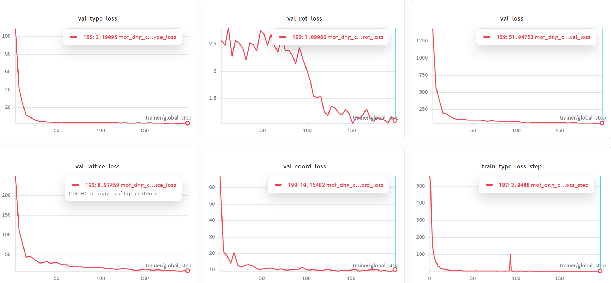
由图片可以看出，这次的loss都明显下降，并且收敛了。
# 设置环境变量以防库冲突
export LD_LIBRARY_PATH=/home/liem/.local/share/mamba/envs/mof-bfn/lib:$LD_LIBRARY_PATH
PYTHONPATH=. python -m experiments.infer \
experiment.wandb.name=infer_dng_test \
inference.ckpt_path=/home/liem/data/mofbfn/checkpoints/logs/mof-csp/mof_dng_cif_200_inf/ckpt/epoch_49-step_200-loss_51.9475.ckpt \
inference.inference_dir=/home/liem/MOF-BFN/infer_results_test_3_3_01
python -m postprocess.assemble \
--res_path /home/liem/MOF-BFN/infer_results_test_3_3_01/raw_results.pt \
--bb_z_path /home/liem/data/mofbfn/datasets/dng/bb_emb_space_tot_z.pt \
--bb_blocks_path /home/liem/data/mofbfn/datasets/dng/bb_emb_space_tot_blocks_processed.lmdb \
--max_process 100
# 检查连通性 (是否形成了完整的 3D 骨架)
python -m evaluation.connect_check \
--res_path /home/liem/MOF-BFN/infer_results_test_3_3_01/raw_results.pt \
--bb_z_path /home/liem/data/mofbfn/datasets/dng/bb_emb_space_tot_z.pt \
--bb_blocks_path /home/liem/data/mofbfn/datasets/dng/bb_emb_space_tot_blocks_processed.lmdb \
--max_process 100
#有效性检查 (Validity Check)
python -m evaluation.validity_check \
--res_path /home/liem/MOF-BFN/infer_results_test_3_3_01/samples \
--max_process 100
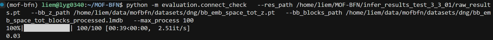
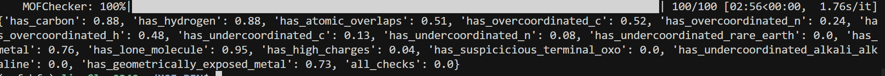
[!NOTE]
随手测试一下，但是训练epoch太短了，效果不好很正常
重点关注晶胞大小：平均值和中位数与实验数据很相近，但是不符合正态分布
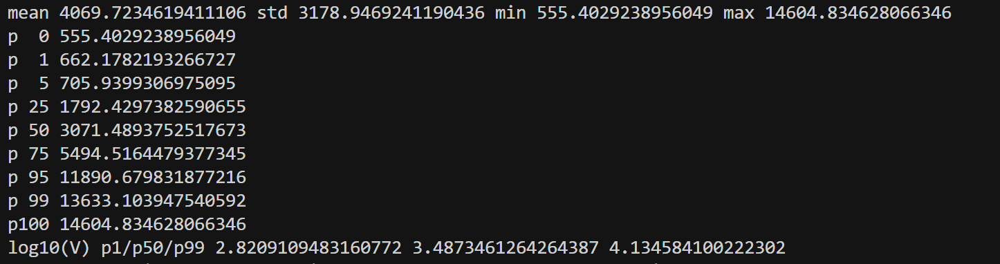
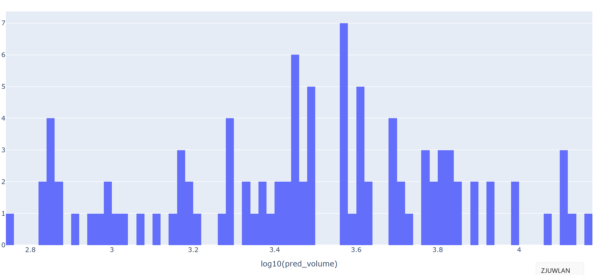
正式训练开始¶
PYTHONPATH=. \
LD_LIBRARY_PATH=/home/liem/.local/share/mamba/envs/mof-bfn/lib:$LD_LIBRARY_PATH \
CUDA_VISIBLE_DEVICES=3,4 \
python experiments/train.py \
--config-dir configs \
--config-name bfn_base_bhm_tot \
experiment.num_devices=2 \
experiment.trainer.strategy=ddp \
experiment.trainer.gradient_clip_val=0.5 \
experiment.trainer.max_epochs=500 \
+model.vol_loss_weight=0.01 \
+model.vol_min_scale=0.85
[!CAUTION]
对于这种“高峰”，我猜测是因为遇到了数据集中太大或太小的个别数据了，这个该如何应对呢？
- 师兄答：训练过程中的突然波动很大可能是有outlier的样本，可以正则化或者删掉
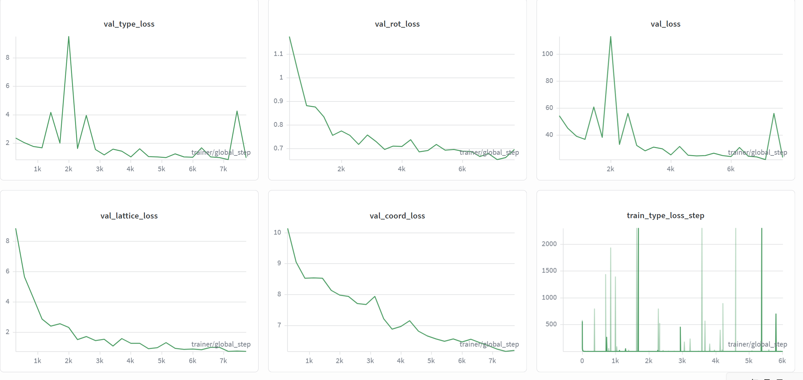
这种过山车式的陡然上升是否合理？
Gemini答：原因：当模型尝试改变晶格（Lattice）或坐标（Coord）时，原本某个位置适合放“氧原子”，现在可能突然因为空间挤压变得适合放“碳原子”。这种类型的微调在分类任务中会导致损失瞬间飙升。
结论：只要尖峰之后能迅速回落到之前的水平（甚至更低），这种波动就是良性的，它说明模型在尝试突破局部的结构束缚。

今日总结¶
- 训练的一个合格的模型是不是一定要跑几百个epoch？我觉得几十个的时候已经比较收敛了？
Gemini答：“假收敛” (Plateauing)：Loss 暂时不动了，可能只是进入了一个平缓的鞍点。如果你的学习率（Learning Rate）有衰减策略，在第 100 或 200 个 Epoch 学习率下降后，Loss 往往会再次“跳水”，挖掘出更细微的结构特征。
物理指标 vs 损失函数：对于 MOF 生成任务，coord_loss 降得快只能说明原子摆放位置大致对了，但长程有序性（晶格对称性）往往需要更长时间的微调。
- 训练出的模型最后一个ckpt不一定是最好的或loss最小的，这时候该如何选择？
师兄答：我们一般不是分train test val三个集嘛，可以用val上的表现做early stopping来提前终止训练，也可以用val上最好的ckpt来做测试